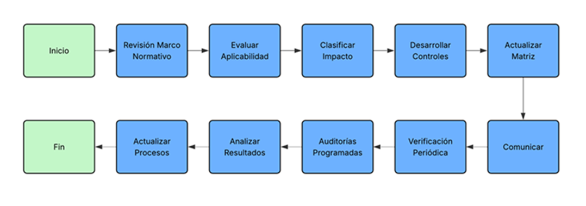

Procedimiento de Cumplimiento de Disposiciones Reglamentarias
1 OBJETIVO
Establecer el proceso detallado para garantizar el cumplimiento de disposiciones legales, reglamentarias y contractuales en materia de Seguridad de la Información, implementando la política "MC711-IT-1 Política de Cumplimiento Disposiciones Reglamentarias" y asegurando el cumplimiento de los requisitos de protección de ISO/IEC 27001:2022, así como con los requisitos del marco TISAX.
2 ALCANCE
Aplica a todos los procesos de identificación, evaluación y verificación del cumplimiento normativo en PRODISMO SRL.
3 RESPONSABLES
- RSI: Coordinación general y reporte
- Departamento Legal: Identificación y interpretación normativa
- Responsables de Área: Implementación de controles
- Todos los Empleados: Cumplimiento en sus funciones
4 PROCESO DETALLADO
4.1. Fase de Identificación
Paso 1: Revisión del Marco Normativo
- Departamento Legal realiza revisión trimestral de nuevas disposiciones
- Utilizar F711-IT-1 Formulario de Identificación de Requisitos Legales para registrar disposiciones identificadas
- Categorizar por tipo y ámbito de aplicación
Paso 2: Evaluación de Aplicabilidad
- Evaluar si la disposición aplica a PRODISMO SRL
- Considerar:
- Actividades de la organización
- Tipos de información manejada
- Relaciones con clientes y proveedores
- Ubicaciones geográficas de operación
Paso 3: Clasificación por Impacto
- Alto: Multas significativas, pérdida de certificaciones, daño reputacional severo
- Medio: Sanciones moderadas, impacto operativo limitado
- Bajo: Requisitos administrativos, impacto mínimo
4.2. Fase de Implementación
Paso 4: Desarrollo de Controles
- Para cada disposición aplicable, desarrollar controles específicos
- Asignar responsable de implementación
- Establecer plazo de implementación
Paso 5: Actualización de Matriz
- Actualizar M711-IT-2 Matriz de Cumplimiento Normativo con nuevas disposiciones y controles
- Incluir:
- Referencia normativa
- Control implementado
- Responsable
- Fecha de implementación
- Estado de cumplimiento
Paso 6: Comunicación y Capacitación
- Comunicar nuevos requisitos a empleados afectados
- Realizar capacitación específica si corresponde
- Actualizar material de referencia
4.3. Fase de Verificación
Paso 7: Verificación de Cumplimiento
- Realizar verificaciones según frecuencia definida usando F711-IT-3 Checklist de Verificación de Cumplimiento
- Verificar:
- Implementación efectiva de controles
- Conocimiento por parte de empleados
- Evidencias de cumplimiento
Paso 8: Auditorías Programadas
- Realizar auditorías usando F711-IT-4 Informe de Evaluación de Cumplimiento
- Frecuencia según criticidad:
- Alto: Trimestral
- Medio: Semestral
- Bajo: Anual
4.4. Fase de Mejora Continua
Paso 9: Análisis de Resultados
- Analizar resultados de verificaciones y auditorías
- Identificar tendencias y áreas de mejora
- Desarrollar planes de acción
Paso 10: Actualización de Procesos
- Incorporar lecciones aprendidas
- Actualizar procedimientos según cambios normativos
- Mejorar controles basado en efectividad
5 FLUJOGRAMA DEL PROCESO

Flujograma del proceso de cumplimiento de disposiciones reglamentarias
6 FORMULARIOS Y REGISTROS
6.1. F711-IT-1: Formulario de Identificación de Requisitos Legales
F711-IT-1 Formulario de Identificación de Requisitos Legales- Identificación de la disposición
- Evaluación de aplicabilidad
- Clasificación de impacto
- Responsable de seguimiento
- Fecha de próxima revisión
6.2. M711-IT-2: Matriz de Cumplimiento
M711-IT-2 Matriz de Cumplimiento Normativo- Base de datos centralizada de cumplimiento
- Campos: ID, disposición, control, responsable, estado, última verificación, próxima verificación
- Búsqueda y filtrado por múltiples criterios
6.3. F711-IT-3: Checklist de Verificación
F711-IT-3 Checklist de Verificación de Cumplimiento- Lista de verificación por disposición
- Criterios de cumplimiento claros
- Espacio para observaciones y acciones correctivas
- Firma del verificador y responsable del área
6.4. F711-IT-4: Informe de Evaluación
F711-IT-4 Informe de Evaluación de Cumplimiento- Resumen ejecutivo del estado de cumplimiento
- Hallazgos detallados por disposición
- Plan de acción con responsables y fechas
- Seguimiento de acciones anteriores
7 CAPACITACIÓN Y CONCIENTIZACIÓN
7.1. Programa Anual de Capacitación
- Sesión general sobre cumplimiento normativo
- Módulos específicos por área funcional
- Evaluación de comprensión
7.2. Contenido de Capacitación
- Marco normativo aplicable a PRODISMO SRL
- Responsabilidades individuales
- Procedimientos de reporte
- Consecuencias del incumplimiento
8 GESTIÓN DE INCUMPLIMIENTOS
8.1. Proceso de Reporte
- Cualquier empleado puede reportar posible incumplimiento
- Canales:
itprodismo@prodismo.com rrhh@prodismo.com - Confidencialidad garantizada
8.2. Investigación y Acción
- RSI investiga reportes dentro de las 48 horas
- Departamento Legal evalúa implicaciones
- Desarrollar plan de acción correctiva
- Comunicar resultado
9 AUDITORÍA Y MÉTRICAS
9.1. Auditorías Internas
- Programa anual de auditorías de cumplimiento
- Muestreo de verificaciones realizadas
- Evaluación de efectividad de controles
9.2. Métricas de Desempeño
- Tiempo promedio de implementación de controles: Objetivo < 30 días
- Porcentaje de disposiciones con verificaciones al día: Objetivo 100%
- Incumplimientos críticos por trimestre: Objetivo 0
10 ACTUALIZACIÓN DEL PROCEDIMIENTO
- Revisión semestral por el RSI
- Actualización ante cambios normativos significativos
- Mejoras basadas en lecciones aprendidas
11 REVISIONES DEL DOCUMENTO
| Rev. N° | Fecha | Descripción |
|---|---|---|
| 0 | 25/8/2025 | Primera Emisión del documento |
| 1 | 22/4/2026 | Revisión completa del documento |